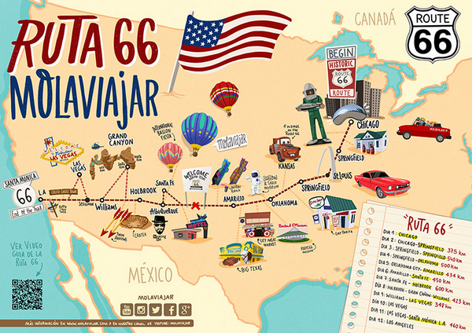
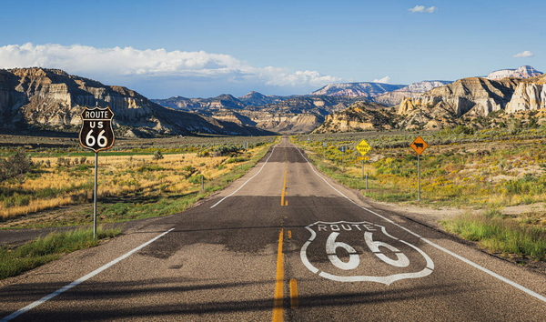
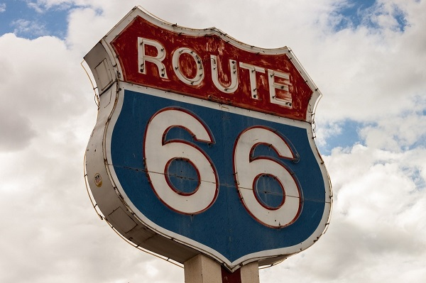

¿Qué es?
La legendaria carretera que atraviesa Estados Unidos
La Ruta 66 es un mito en sí misma, un icono dentro de los Estados Unidos y no es para menos. Los norteamericanos la llaman “The Mother Route” (la Ruta Madre) porque es una de las carreteras federales originales y porque cruza gran parte del país. Es un recorrido mítico y muy atractivo. Un road trip maravilloso y mágico que jamás olvidarás. 3.945 kilómetros apasionantes en los que te cruzarás con lugares fascinantes, únicos y auténticos que te atraparán y te conquistarán. Además, el encanto de este viaje es que también encontrarás personas fascinantes. Unos que hacen el mismo viaje que tú y otros que tratan de mantener el espíritu original de la “Ruta 66”, ya sea con sus negocios o con su simple testimonio. No dudes en preguntar para que te cuenten los secretos mejor guardados de “The main street of America”, otra forma de llamarla. Se trata de un viaje que permite un alto grado de libertad, puesto que podrás parar donde más te apetezca, en cualquier rincón y en cualquier pueblo que ni siquiera salga en el mapa. Pero no te preocupes porque la “Ruta 66” está perfectamente indicada y transita habitualmente paralela a una autovía, que te permitirá recuperar tiempo si un día te entretienes demasiado. Además, tendrás la oportunidad de visitar dos grandes ciudades como son Chicago y Las Vegas y pasar una noche en el Gran Cañón, una auténtica maravilla de la naturaleza.
Más Información:
Mapa de la ruta 66 y sus lugares de interés:
¿Qué ver?
Imagenes
Carretera típica de la Ruta 66.
Famoso logotipo de la Ruta 66.
20 curiosidades sobre la ruta 66
¿Dónde está?
Esta ruta transcurre integramente por Estados Unidos
Mapa y sus puntos de interés